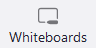

- Affordances, visual variables and interaction flows
- Affordance and visual variables:
- Interaction flow:
- Proposed Approaches:
- Affordance and visual variables:
- Interaction flow:
- Proposed Approaches:
- Metaphors and idioms
- Cognitive overload
- Improvements
- Desktop
- Buttons: Due to the resize window function of the desktop application, certain buttons on the main screen may disappear, requiring several actions to find a button and use it.
- Share: When a user wants to share the screen, they have to press quite a large number of buttons to perform this action
- Costumizable order of buttons: The bottom bar that contains all the buttons allows editing according to the user's preferences so that he can choose which buttons are more useful for him and place them in a visible place, especially when the resize window function is also used.
- Share: The desktop and web app could simplify the screen sharing interface by reducing the number of buttons and options.
- Mobile
- Buttons: For the current version of the application, the buttons used to create or participate in a meeting are not in an easily accessible place.
- Share: When the user uses the mobile application and wants to share the screen, there are many options, including that of sharing files
- Costumizable order of buttons: Just like in the case of the desktop application, all the buttons should have the possibility to be placed wherever the user wants.
- Share: For the share button, there should only be one use to share the screen on the phone and in the chat window there should be buttons only to share some files.
- Empiric Laws
- New Features
Academic presentation
Schedule meeting: The presenter can schedule a meeting.
Join meeting: Allow people to join a meeting.
Screen sharing: The presenter can share their screen and present content.
Virtual background: Enables the presenter to employ a virtual background to block out distractions and establish a professional atmosphere.
Breakout rooms: The presenter can divide the audience into smaller groups for talks or activities.
Whiteboard: Enables the speaker to annotate or draw.
Chat: Allows attendees to ask questions or make comments.
Raise hand: Allows attendees to raise their hand virtually and let the speaker know they have questions.
The speaker provides the material while sharing their screen, then accepts questions at the conclusion. Participants can offer questions in the chat feature or indicate their want to speak by raising their hands.
Introduce a tool, like polling or quizzes, that enables the presenter to engage the audience more actively. This can assist in maintaining audience interest and offer a quick response.
Attending meeting at late hours
Audio and video calls:Attendees can engage in the debate through audio and video calls.
Screen sharing:Allows the presenter to share content.
Chat:Participants can communicate with one another or ask questions to the presenter.
Raise hand:Participants can raise their hand virtually in order to ask questions.
Via the chat or audio feature, participants join the call, listen to the topic, and engage as needed.
Provide a function that converts the call's audio to text automatically. Those who might struggle to focus or stay awake during a late-night meeting can benefit from this.
Visual metaphors and idioms would not be directly applicable if we used a text-only interface. Instead, functionality and feedback would be given by textual standards. To establish and handle meetings, webinars, and other Zoom resources, for instance, the Zoom API should offer a set of commands.
Metaphors:
Gallery View: This is a view in Zoom that displays all the participants in a meeting in a grid-like format, similar to a gallery.
Mute/Unmute Button: This is a button in Zoom that allows users to mute or unmute their microphone during a meeting It is usually represented by a microphone icon with a slash through it when muted
Chat Box: This is a text-based chat window in Zoom that allows users to communicate with each other via text. It is represented by an icon of a speech bubble
Raise Hand Button: Allows participants to indicate that they want to speak or ask a question. It is usually represented by an icon of a hand raised
Video Button: This is a button in Zoom that allows users to turn their video on or off during a meeting. It is usually represented by an icon of a video camera
Settings Button: Users can access and customize their audio and video settings. It is usually represented by an icon of a gear
Home Button: Access the pain page. It is represented by an icon of a house
Mail Button: Allows users to access their Zoom Mail. It is represented by an icon of a letter
Calendar/Schedule Button: This is a button in Zoom that allows users to access and plan their calendar. They can schedule a meeting or they can see future meetings. It is represented by an icon of a calendar
Whiteboards Button: Users access and use the whiteboard. It is represented by an icon of a whiteboard with a pen 
Participants Button: It is used to show the list of participants. It is represented by an icon of two persons
Reactions Button: Used by participants to share their reactions using emoticons. Represented by a smiley face
Security Button: Used by the creator of the meeting in order to set what participants are allowed to do. Represented by a shield
Idioms:
Share screen Button: This button features a square with an arrow oriented up, which represents the idea of sharing your computer screen with others in the meeting
Record Button: This is a button in Zoom that allows users to record a meeting. It is represented by an icon of a white circle with a white dot in the center.
Join meeting Button: A person use this button to join a meeting. It is represented by a square with a plus
Full Screen Button: This is a button in Zoom that allows users to view the meeting in full-screen mode. It is represented by an icon of an arrow pointing outward.
Textual conventions that could be used in a Zoom CLI:
create meeting: This command could be used to create a new Zoom meeting, with additional arguments specifying the time, date, and other details.
join meeting: This command could be used to join a Zoom meeting, with additional arguments specifying the meeting ID and password.
list meetings: This command could be used to list all of the Zoom meetings associated with a user's account.
end meeting: This command could be used to end an ongoing Zoom meeting.
zoom calendar:This command could be used to list all Zoom meetings from a person's calendar, with additional arguments specifying a day, a week, a certain period of time.
zoom details:This command could be used to get details from a meeting such as password.
zoom invite:This command could be used to add a new person in the current meeting.
Problems
Solutions
Problems
Solutions
1.5.1. Fitts' Law
1.5.2. Hick's Law
1.5.3. Steering Law
Cisco Webex is a video conferencing and collaboration product suite. This cloud-based collaboration suite is comprised of software including Webex Meetings, Webex Teams and Webex Devices. The Webex suite is a merger of Cisco's Webex web conferencing platform and the Cisco Spark team collaboration app.
- Affordances, visual variables and interaction flows
- Existing affordances & Visual Variables:
- Interaction flow:
- Suggestions:
- Existing affordances & Visual Variables:
- Interaction flow:
- Suggestions:
- Metaphors and idioms
Use Case 1: Late hour video meeting with family:
These are features that allow all parties have a pleasant family meeting. Majority of them have proper icons to help the users recognize the feature (mute/unmute, enabling/disabling camera, etc)
Audio & video capabilities: for communicating freely
Screen sharing: to share relevant photos/videos of recent events
Chat functionality: text-based communication, for reporting problems(camera/ microphone doesn't work, letting others know there is a problem with their connection etc.).
Different applications options: for group or individual entertainment (games, interactive applications)
- A family member sends the link on the whatsApp group
- Everyone who sees it clicks it
- The discussion starts
Updating the applications' system in a way that would suggest applications of interest depending on the purpose of the meeting.
Use Case 2: Online Training Session
These are features that allow both the presenter and the participants to have a productive meeting and gaining knowledge. Majority of them have proper icons to help the users recognize the feature (mute/unmute, enabling/disabling camera, etc)
Schedule meeting: for planning the session ahead
Audio & video capabilities: for better communication
Screen sharing: to deliver multimedia content to all participants at the same time
Virtual Whiteboard: beta feature, it helps the presenter get the point across faster and more efficient, being able to modify the content to accommodate the participants.
Breakout rooms: to divide the audience into small groups
Chat functionality: text-based communication, for non-urgent questions or comments.
Raise hand: for drawing attention that the participant wants to speak
Q&A sessions: to dedicate special attention to questions
Polling: to check participants' opinions or knowledge
Recording capability: for archiving the meeting and reviewing later
Different applications options: to adapt and choose from a variation of feature, without being overwhelmed
- The trainer/ organizer schedules or creates a new meeting.
- Participants join the meeting.
- Trainer sharescreen the multimedia content they have prepared. Following with explanations on the whiteboard. Meanwhile, they can/cannot start the Q&A session.
- During this time participants can give feedback, ask or answer questions.
- Trainer may start a poll to check whether there is a need for clarifications.
Updating the applications' system in a way that would suggest applications of interest depending on the purpose of the meeting.
Metaphors:
Muted/Unmuted: Allows users to turn on/off their microphone. It it represented by a picture of a microphone slashed by a red line when it is off , labeled with the action the user can take(mute - when the mic is ON, unmute - when the mic is OFF). Additionally, when it receives sound, the green color moves up and down to denote that it is working.
Video ON/OFF: Lets users to turn on/off their camera. It it represented by a picture of a camera slashed by a red line when it is off , labeled with the action the user can take(stop video - when the camera is ON, start video - when the camera is OFF).
Record button: Allows users to record the meeting and review it later. It is represented by a picture of a vinyl record disc  labeled with the action.(record)
labeled with the action.(record)
Raise hand & reactions: These have two separate functions that are very similar, which is why they are merged in one single element. The hand represents the action of raising the hand, and the smiley face with a plus sign represents adding reactions.
Leave/End meeting: Permits the host to end the meeting and the participants leave it. It is represented by a white "X" inside of a red circle.
Chat Box: Opens a text-based chat window that allows users to communicate with each other via text. It is represented by an icon of a speech bubble found in majority of comic books. It is found with  (web) and without (desktop) the label.
(web) and without (desktop) the label.
Home: Sends user to the main page. It is represented by a picture of a house.
Join meeting: Found in the main page, it allows user to join an existing meeting. It is represented by an arrow pointing to a door.
Schedule a meeting: Found in the main page, it allows the host to plan the meeting ahead. It is represented by a calendar with a plus sign inside.
Settings: Found in the main page, it allows users to access advanced settings. It is represented by a gear. 
Help: Offers user a variety of options: updates, keyboard shortcuts, help center, news. It is represented by a question mark in a circle. 
There are many other metaphors used in the desktop or web application, but these are the most relevant and useful ones.
Idioms:
Down arrow: Both microphone and camera buttons come with a small down arrow to hide the advanced settings (input/output level, filter, device to be used, etc.).
Start new meeting: Found in the main page, it allows the host to create a new meeting. It is represented by a camera.
Upgrade: Gives the option to users to upgrade to a premium version. It is represented by a crown.
Share scree: Permits users to share multimedia content from their computer. It is represented by a box with an up arrow.
More options: Gives more options to users, such as: inviting others to the meeting or move to another device. It is represented by a line of three dots in s circle. 
Applications: Lets users choose from a multitude of apps. It is represented by a grid of three squares and a plus sign.
Participants: Allows user to see other participants in the meeting. It is represented by a human figure with a column of three lines.
Panel Options: Allows users to choose from taking notes or opening a Q&A session. It is represented by a line with three dots. 
There are many other idioms used in the desktop and web application, but these are the most relevand and useful ones.
CLI:
newm (new meeting): Create/schedule a meeting, paired with additional arguments specifying the time, date, and other details. (eg: newm -d 20.10.23 -t 08:30 -dr 2, create a two hour meeting on 20th of october in 2023, at 08:30 am. newm, creates a meeting at the moment)
joinm (join meeting): Join an existing meeting, paired with mandatory arguments specifying the meeting ID and password.(eg: joinm 2741 692 3383 0848)
sttg (settings): Access advanced settings, with additional arguments specifying which settings you are interesting in changing. (eg:sttg -a:o=6, sets the audio output level to 6)
end: End (in the case of the host) or to leave a meeting (in the case of participants.
moff (microphone off): Mute the microphone.
mon (microphone on): Unmute the microphone.
coff (camera off): Disable the camera.
con (camera on): Start the camera.
rcd (record): Record the meeting.
rct (react): React, paired with additional arguments. (eg: rct -rh , raises your hand; rct -h, reacts with a heart)
cd: Return to the previous directory. Works the same as the terminal command.
help: Opens the help menu.
upg (upgrade): Upgrade the app, paired with additional arguments specifying the level you wish to upgrade. (eg: upg -p1, upgrade to premium 1)
app: Access applications, paired with additional arguments specifying which app you would like to open. (eg:app -ttt, opens tic tac toe game)